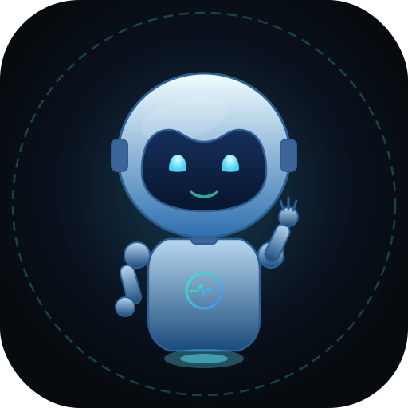

NoviArkAgente de IA que escribe, ejecuta, prueba y corrige programas en tu computadora.
Necesitas Python 3.10 o superior.
git clone https://github.com/JUXN1988/noviark.git
cd noviark
# Windows: doble clic en iniciar.bat
# Linux / macOS:
bash iniciar.shLuego entra en Ajustes → Proveedores y claves, pega la API key de un proveedor (o conecta Ollama / LM Studio) y empieza a conversar.
Archivos, búsqueda en el código, PowerShell, Python, Linux, procesos, HTTP, búsqueda y lectura web, imágenes, captura de pantalla, navegador automatizado y más.
Puedes editar o aprobar el plan. Si no haces nada, se aprueba solo tras una cuenta regresiva.
diagnosticar revisa el proyecto con archivo y línea; probar_web prueba webs y juegos en un navegador invisible.
Si un modelo piensa demasiado sin actuar o entra en bucle, NoviArk lo corta y lo obliga a actuar.
Si el agente se atasca, el trabajo pasa al modelo más capaz que tengas habilitado.
Guarda objetivo, plan, lo hecho y los errores. Si un modelo falla, el siguiente continúa desde ahí.
Ollama y LM Studio, con el contexto ajustado a la memoria de tu equipo. Tu código no sale de tu PC.
Modos de permiso, copias y puntos de restauración, borrado a la Papelera, escáner de secretos y bóveda de claves (cifrada con DPAPI en Windows).
Usa el mismo formato de configuración que Claude Desktop.
NVIDIA, Google Gemini, OpenAI, Anthropic, OpenRouter, Groq, DeepSeek, Mistral, xAI, Cerebras, Hugging Face, Cohere, Cloudflare Workers AI, Ollama Cloud, Vercel AI Gateway y cualquier API compatible con OpenAI. Además Ollama y LM Studio para modelos locales. Puedes guardar varias claves por proveedor.
NoviArk se distribuye bajo la Noviark Community License 1.0. Es gratis para uso personal, educativo, de investigación y sin fines de lucro. Las empresas pueden evaluarlo hasta 60 días; el uso comercial continuado requiere licencia comercial.